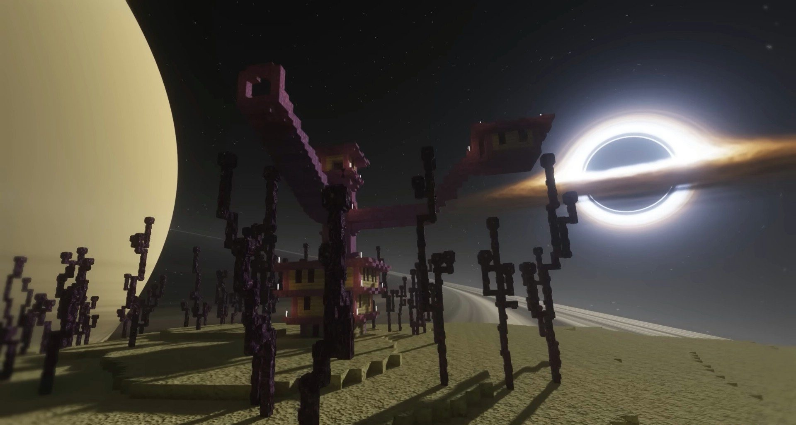
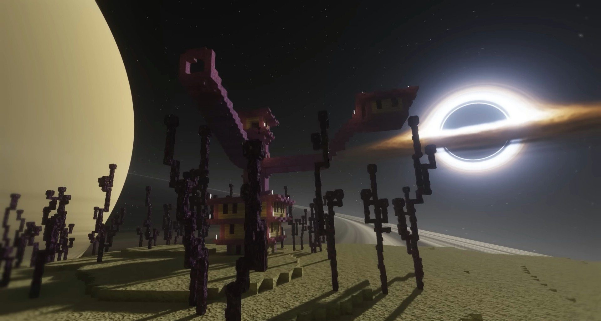

What Are Minecraft Shaders?
- Minecraft shaders are modifications that improve the game's graphics by adding realistic lighting, shadows, reflections, and other effects.
- Minecraft shaders often requires a mod to run such as Optifine, Iris, Sodium,... etc
Top best minecraft shaders for 1.21.x
-Complementary shaders
-Complementary Shaders is a shader pack for Minecraft Java Edition with exceptional attention to detail, high standards of quality, and top tier optimisation. It offers a ton of high quality effects, two default visual style choices, custom effects for almost every block in the game, profiles ranging from Potato to Ultra
-When using this shader you can use 2 styles Unbound and Reimagined
Compatible verions: 1.16.x 1.17.x 1.18.x 1.19.x 1.20.x 1.21.x


IterationT
-IterationT Shaders is an impressive shaderpack that introduces a host of atmospheric enhancements. This shader pack can give your minecraft hyper-realistic graphics. To truly appreciate its beauty, you’ll need a high-performance computer and a powerful graphics card.
Compatible verions: 1.20.x 1.21.x


 

Bliss shaders
-Bliss is a highly customizable shader.This shader pack also features a dynamic sky that changes every day which looks so pretty
Compatible versions: 1.19+